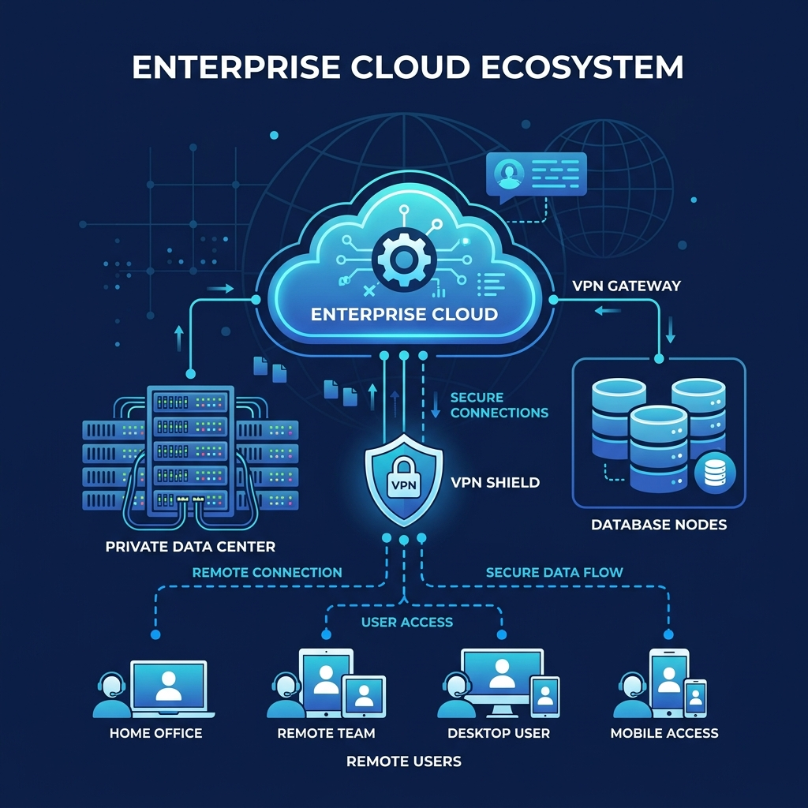

Sense Servidor Local
Sense Servidor Local: Estalvies costos de maquinari i electricitat. Rendiment garantit per a HANA.
Servidors dedicats d'alt rendiment per a entorns crítics de SAP Business One.
SAP Business One és una eina potent que requereix una infraestructura robusta. Publiquem els teus entorns SAP en servidors cloud privats dedicats amb discs ultra-ràpids NVMe i memòria RAM garantida, assegurant que les teves transaccions, estocs i comptabilitat es carreguin a l'instant i amb total seguretat.

Servidor Privat Dedicat: Recursos aïllats i optimitzats per al motor de base de dades SAP HANA o SQL Server.
VPN Xifrada i IPSEC: Enlaços directes i xifrats per connectar oficines principals, magatzems i delegacions amb el servidor SAP.
Polítiques de Backup Continu: Còpies amb Veeam integrades de sistema operatiu i snapshots de bases de dades per a recuperació davant desastres.
Gestió i Monitorització 24/7: Vigilància constant del rendiment, amplada de banda i ús de recursos del servidor.
Para quién es: Ideal per a empreses amb operacions comercials crítiques, magatzems logístics o processos de producció que utilitzen SAP Business One i requereixen alta disponibilitat, suport continu i una seguretat de nivell corporatiu.
Sense Servidor Local: Estalvies costos de maquinari i electricitat. Rendiment garantit per a HANA.
Accés Total: Connecta't amb seguretat des de qualsevol delegació, magatzem o en mobilitat.
Protecció Robusta: Entorn blindat davant d'intrusions externes amb tallafocs dedicats i MFA.
Alta Escalabilitat: Creix en recursos de maquinari segons augmenti el volum del teu negoci.
Sí. Configurem un servidor privat amb els recursos exactos que requereix el teu SAP (HANA o SQL) per a un funcionament àgil i sense interferències d'altres usuaris.
Totalment. L'accés es realitza mitjançant túnels VPN xifrats empresarials i passarel·les RDP protegides amb doble factor d'autenticació (MFA) per bloquejar accessos no autoritzats.
El nostre sistema monitoritza el servidor SAP 24/7. Davant de qualsevol anomalia de rendiment o caiguda de xarxa, els nostres enginyers intervenen immediatament per restablir el servei.
Explica'ns quin sistema tens ara i t'ajudarem a definir una solució cloud, híbrida o d'accés remot segura i escalable.
Contacta amb nosaltres